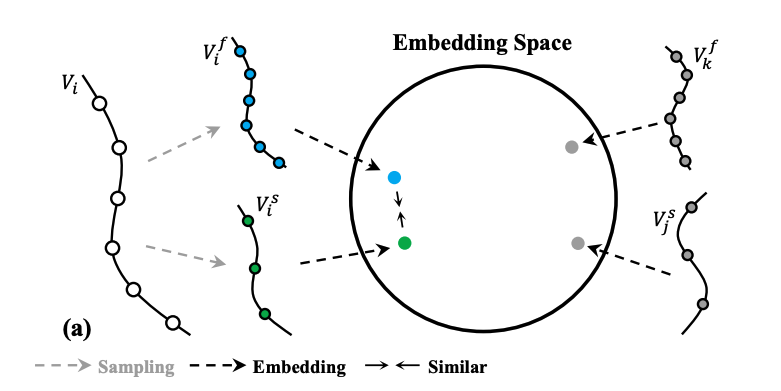

|
Department of Information Engineering The Chinese University of Hong Kong E-mail / Github |

|
| Selected / All by Year / Video Understanding / Generative modeling / Structural Representation / |
|
 |
Video Representation Learning with Visual Tempo Consistency,
Ceyuan Yang, Yinghao Xu , Bo Dai, Bolei Zhou. arxiv pre-print, 2020. [Paper][Code] |

|
Temporal Pyramid Network for Action Recognition,
Ceyuan Yang*, Yinghao Xu*, Jianping Shi, Bo Dai, Bolei Zhou. IEEE Conference on Computer Vision and Pattern Recognition (CVPR), 2020. [Paper][Webpage][Code] |